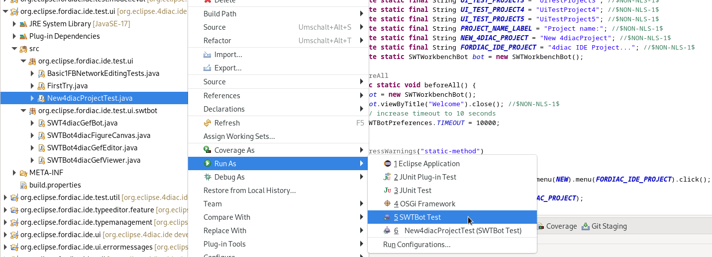
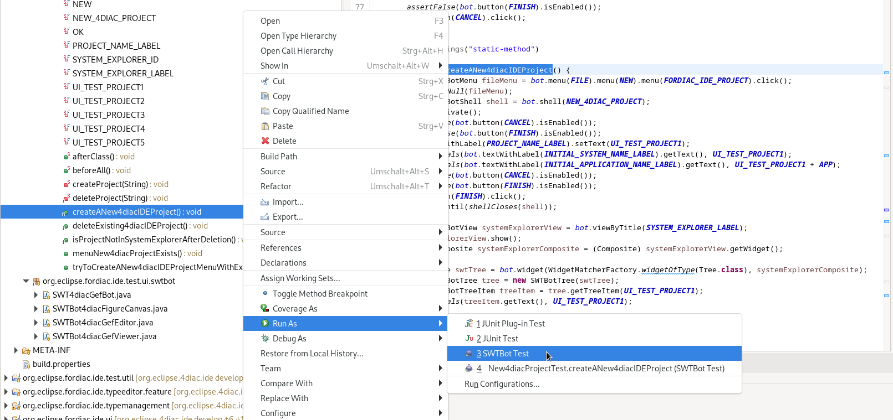
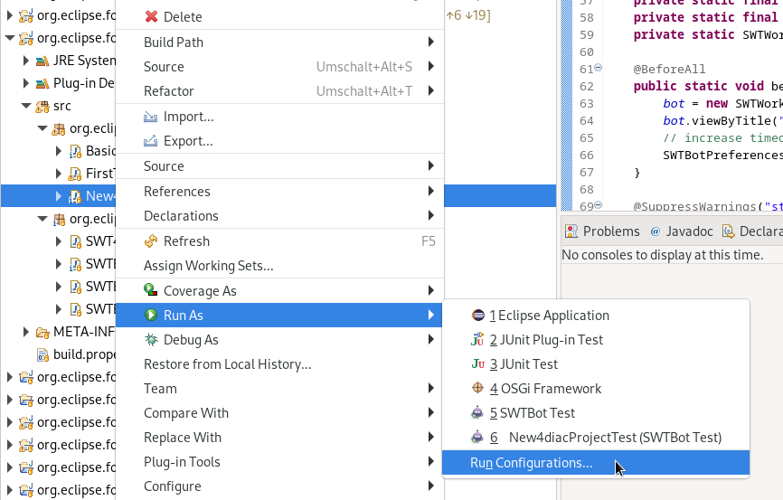
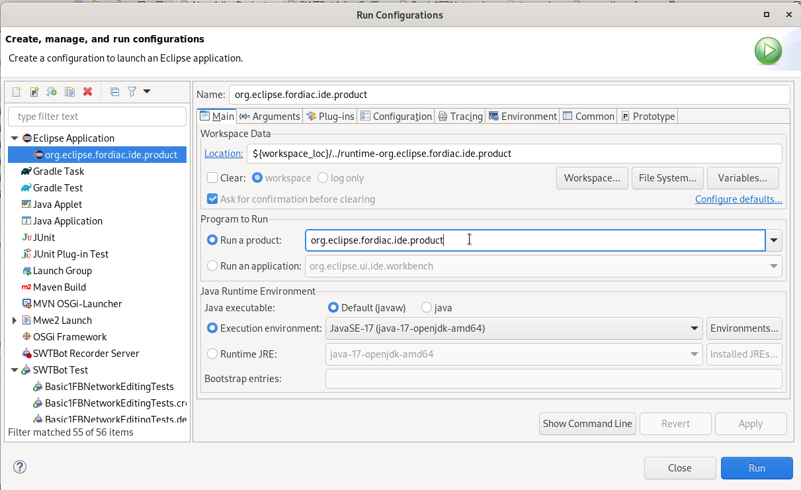
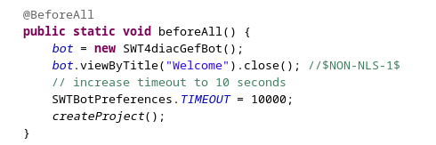
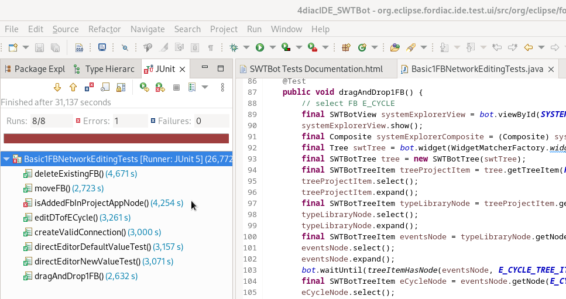

Often open source projects have only a few contributors. These try to bring in all new ideas and improvements. However, this leaves little time for testing, which means that the quality of the software suffers. Since Eclipse 4diac, testing is also still done manually, which on the one hand is inefficient and on the other hand is often not done completely due to time constraints. For this reason, an automated test set for the 4diac IDE user interface would be a good improvement.
from https://wiki.eclipse.org/SWTBot:
Eclipse SWTBot™ is a Java based UI/functional testing tool for testing SWT and Eclipse based applications. SWTBot provides APIs that are simple
to read and write. The APIs also hide the complexities involved with SWT and Eclipse. This makes it suitable for UI/functional testing by
everyone, not just Eclipse developers. SWTBot also provides its own set of assertions that are useful for SWT. You can also use your own
assertion framework with SWTBot. SWTBot can record and playback tests and integrates with Eclipse, and build technologies (Tycho, Ant) to
make it easy to use in Continuous Integration.
All SWTBot related files can be found in the 4diac IDE source code in the folder org.eclipse.fordiac.ide.test.ui.
In order to be able to perform advanced tests, the provided SWTBot classes were extended. For example, it became clear that this is not possible with the standard classes when dragging connections. By default, drag and drop works by selecting the 1st pin and then jumping to the 2nd pin and selecting it. 4diac IDE unfortunately doesn't work like that, mouse movement between selections is needed.
Therefore 4 extension classes were created, which can be found in the 4diac IDE source folder org.eclipse.fordiac.ide.test.ui.swtbot. They are the classes SWT4diacGefBot, SWTBot4diacGefViewer, SWTBot4diacGefEditor SWTBot4diacFigureCanvas.
In order to get a test administration, the markdown file SWTBotTestSetOf4diacIDE was created under /org.eclipse.fordiac.ide.test.ui folder. This file was created to document existing tests and to collect ideas for new tests. The column status shows whether the test has already been implemented or is planned for the future. The test have been divided into topics to provide a better overview. These are currently New System, Tests with 1 FB, Tests with 2 FBs and Tests with multiple FBs.
One topic is the creation of a new 4diac project. In this group we test
tba
tba
To run all tests of a class in the folder org.eclipse.fordiac.ide.test.ui, right click on the class → Run As → SWTBot Test.

To execute a single test method select the method and right click → Run As → SWTBot Test.

After a new class is added it is necessary to change the run configurations from Eclipse Platform to
Eclipse 4diac to run the tests. The fastest way to do this is to

In the window that appears, click on the Main tab and select to the right of Run a project the option org.eclipse.fordiac.ide.product.

In order to be able to run the tests individually, it is necessary to make the same setting with the individual test methods as well. However, it was noticed that sometimes the first 1-2 test runs do not go through despite these settings because the settings are reset to Eclipse platform. In this case, repeat the above steps.
The annotations for the tests are the same as in Junit5. The introduction to JUnit 5 can be read the introduction here
The test classes Basic1FBNetworkEditingTests and future test classes are structured in such a way that 4diac IDE is started first. The beforeAll() method with the @BeforeAll annotation creates the bot and it closes the welcome window that appears when 4diac starts. This closing is important, otherwise the tests cannot be executed.
Settings such as timeout and playback speed are also set here.

Starting the tests will bring up a new tab called JUnit. This provides information about which test was successful and which test failed. The example below shows that all but one of the tests have passed successfully. This means that the expected result has occurred. However, one test was unsuccessful. This test is interesting because it probably found an error in the program. A closer look at what went wrong is now necessary.
When creating a test, special care must be taken to ensure that the desired event is queried. This is the only way to rule out incorrect results due to incorrect tests. In our case, the test is correct, we found an error, the FB is actually not displayed in the hierarchy tree. Investigations revealed that the bug has already been reported, so no further action is necessary in this case.

Or Go to top